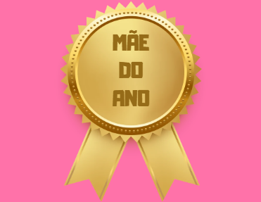
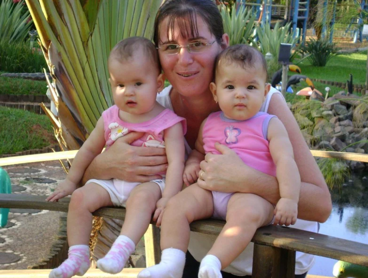
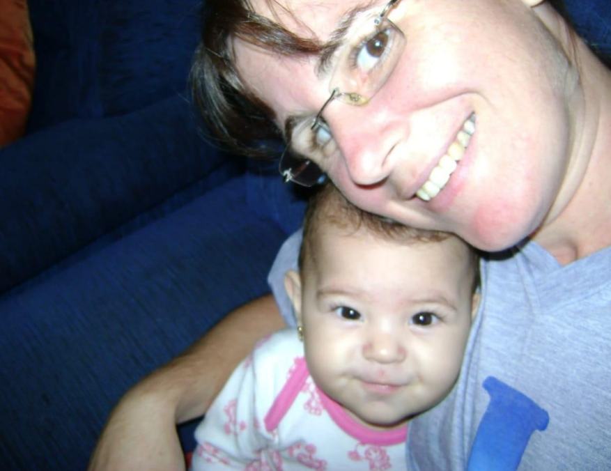
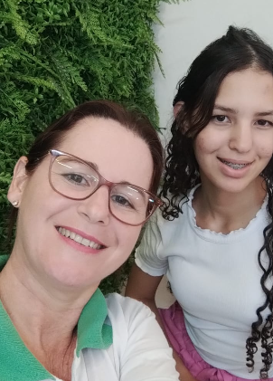

Iracema de Fátima de Melo
Por isso (e muito mais) merece o prêmio
de melhor mãe do mundo!




Hoje é o dia que você comemora ter ficado horas em um hospital parindo dois bebês e depois ficar acordada à noite para dar leite, trocar fralda e muitas outras coisas que te desgastaram. Mas agora todo esforço valeu a pena, e mostra o quanto você ama a gente e nós te amamos muito também mesmo quando nós discutimos, acho que é normal essas coisas. Espero que goste, deu muito estresse fazer logo hoje na sexta-feira, mas como é para você eu fiz com carinho e paciência.